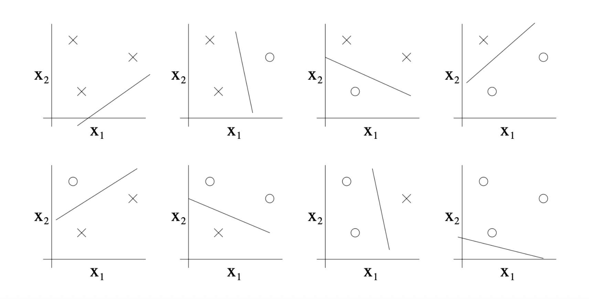
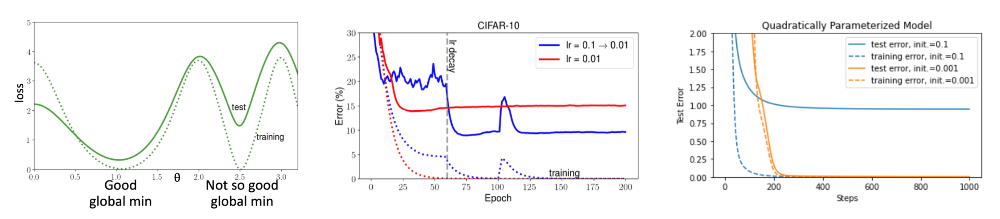

1. 들어가며: 왜 일반화(Generalization)인가?
- 기계학습 모델을 학습할 때 우리가 진정으로 던져야 할 질문은 다음과 같습니다.
“학습 데이터(Training set)에서 성능이 좋다고 해서, 실제 테스트 데이터(Test error)에서도 성능이 좋을 것이라고 보장할 수 있는가?”
- 본 포스트에서는 딥러닝을 포함한 기계학습 알고리즘이 성공적으로 동작하기 위한 조건과 편향-분산 트레이드오프(Bias-Variance Tradeoff)를 수학적으로 정형화하는 방법을 살펴봅니다.
2. 표본 복잡도 한계 (Sample Complexity Bounds)
- 모델의 성능을 평가하기 위해, 가장 단순한 이진 분류 문제(\(y \in \{0, 1\}\))를 가정해 보겠습니다.
2.1. 경험적 위험과 일반화 오차
- 분류기(Classifier) \(h\)의 성능을 측정하는 두 가지 주요 지표는 다음과 같습니다.
- 경험적 위험(Empirical Risk / Training Error): 학습 데이터 중 분류기가 오분류한 비율을 의미합니다. \[\hat{\epsilon}(h) = \frac{1}{n}\sum 1\{h(x^{(i)}) \ne y^{(i)}\}\]
- 일반화 오차(Generalization Error): 실제 데이터 분포 \(\mathcal{D}\)에서 오분류할 확률입니다. \[\epsilon(h) = P_{(x,y)\sim \mathcal{D}}(h(x) \ne y)\]
- 우리는 학습 데이터와 테스트 데이터가 동일한 분포를 따른다고 가정합니다. 학습 알고리즘은 보통 고려 가능한 모든 분류기의 집합인 가설군(Hypothesis class) \(\mathcal{H}\) 내에서, 경험적 위험을 최소화하는 최적의 분류기 \(\hat{h}\)를 찾습니다. \[\hat{h} = \arg\min_{h \in \mathcal{H}} \hat{\epsilon}(h)\]
2.2. 오차 한계 유도 과정
유한한 개수의 가설군 \(\mathcal{H} = \{h_1, \dots, h_k\}\)가 주어졌을 때 (\(|\mathcal{H}| = k\)), \(\hat{\epsilon}(h)\)가 \(\epsilon(h)\)에 얼마나 가까운지 다음 두 가지 확률론적 보조정리를 활용하여 증명할 수 있습니다.
- Union Bound: \[P(A_1 \cup \dots \cup A_k) \le P(A_1) + \dots + P(A_k)\]
- Chernoff Bound: \(Z_1, \dots, Z_n \sim_{i.i.d.} \text{Bernoulli}(\phi)\)이고 \(\hat{\phi} = \frac{1}{n}\sum Z_i\)일 때, 임의의 \(\gamma > 0\)에 대해 \[P(|\phi - \hat{\phi}| > \gamma) \le 2e^{-2\gamma^2 n}\]
어떤 특정 가설 \(h_i\)에 대해 오차 차이가 \(\gamma\)보다 클 사건을 \(A_i\)라고 정의해 봅시다. \[A_i := |\epsilon(h_i) - \hat{\epsilon}(h_i)| > \gamma\]
Chernoff Bound에 의해 \[P(A_i) \le 2e^{-2\gamma^2 n}\]가 성립합니다.
이제 \(\mathcal{H}\) 안에 오차 차이가 \(\gamma\)를 초과하는 가설이 적어도 하나 존재할 확률을 Union Bound로 구합니다. \[P(\exists h \in \mathcal{H}, |\epsilon(h) - \hat{\epsilon}(h)| > \gamma) = P(A_1 \cup \dots \cup A_k)\] \[\le \sum P(A_i) \le 2k e^{-2\gamma^2 n}\]
이 식의 양변을 1에서 빼어 부정을 취하면, 모든 가설의 오차가 \(\gamma\) 이내일 확률의 하한을 얻습니다. \[P(\forall h \in \mathcal{H}, |\epsilon(h) - \hat{\epsilon}(h)| \le \gamma) \ge 1 - 2k e^{-2\gamma^2 n}\]
2.3. 편향-분산 트레이드오프의 증명
우변의 확률을 \(1-\delta\)로 치환하여 정리하면 다음과 같은 중요한 정리가 도출됩니다.
확률 \(1-\delta\) 이상으로 다음이 성립합니다. \[\epsilon(\hat{h}) \le \min_{h \in \mathcal{H}} \epsilon(h) + 2\sqrt{\frac{1}{2n}\log\frac{2k}{\delta}}\]
위 식을 오차 범위 \(\gamma\)에 대해 샘플 수 \(n\)으로 정리하면, 필요한 최소 데이터 수(Sample Complexity)를 알 수 있습니다. \[n \ge \frac{1}{2\gamma^2}\log\frac{2k}{\delta} = O\left(\frac{1}{\gamma^2}\log\frac{k}{\delta}\right)\]
해석: 가설군의 크기 \(k\)를 늘리면 모델이 복잡해져 \(\min_{h} \epsilon(h)\) (편향, Bias)은 작아지지만, 우측의 페널티 항인 \(2\sqrt{\dots}\) (분산, Variance)은 커집니다. 이것이 바로 수학적으로 증명된 편향-분산 트레이드오프입니다.
3. 모델 파라미터 수와 VC 차원 (VC Dimension)
단순히 수학적 수식의 파라미터 개수로 모델의 복잡도를 정의하는 것은 위험합니다.
예를 들어 선형 분류기 \(h_\theta(x) = 1\{\theta_0 + \theta_1 x_1 + \dots + \theta_d x_d \ge 0\}\)는 \(d+1\)개의 파라미터를 갖습니다. 그러나 \(\theta_i\)를 \((u_i^2 - v_i^2)\)로 치환한 모델은 \(2d+2\)개의 파라미터를 갖지만, 수학적으로 완전히 동일한 분류기입니다.
이러한 모순을 해결하기 위해 모델의 진정한 복잡도 척도인 Vapnik-Chervonenkis (VC) 차원을 도입합니다.
3.1. 산산조각 내기(Shattering)와 VC 차원
- 가설군 \(\mathcal{H}\)가 데이터 집합 \(S = \{x^{(1)}, \dots, x^{(D)}\}\)를 Shatter한다는 것은, \(S\)에 임의의 레이블 \(\{y^{(1)}, \dots, y^{(D)}\}\)이 주어지더라도 이를 완벽하게 맞추는 가설 \(h \in \mathcal{H}\)가 항상 존재한다는 뜻입니다.
- VC 차원(\(VC(\mathcal{H})\))은 \(\mathcal{H}\)가 Shatter할 수 있는 가장 큰 데이터 집합의 크기로 정의됩니다.

- 위 그림처럼 2차원 선형 분류기는 3개의 점에 대한 8가지 레이블링을 모두 구분할 수 있습니다. 하지만 4개의 점은 Shatter할 수 없으므로, 2차원 선형 분류기의 VC 차원은 3입니다 (\(VC(\mathcal{H}) = 3\)).
3.2. VC 차원을 이용한 일반화 정리
VC 차원 \(D\)를 사용하면 기존의 오차 한계 정리를 무한 가설군에 대해서도 확장할 수 있습니다. 확률 \(1-\delta\) 이상으로 다음이 성립합니다. \[|\epsilon(h) - \hat{\epsilon}(h)| \le O\left(\sqrt{\frac{D}{n}\log\frac{n}{D} + \frac{1}{n}\log\frac{1}{\delta}}\right)\] \[\epsilon(\hat{h}) \le \epsilon(h^*) + O\left(\sqrt{\frac{D}{n}\log\frac{n}{D} + \frac{1}{n}\log\frac{1}{\delta}}\right)\]
즉, 오차 차이를 \(\gamma\) 이하로 만들기 위해 필요한 샘플 수 \(n\)은 VC 차원 \(D\)에 선형적(Linear)으로 비례합니다 (\(n = O_{\gamma, \delta}(D)\)). 대부분의 가설군에서 VC 차원은 모델 파라미터 수에 비례하므로, 최적 오차에 근접하기 위한 필요 훈련 데이터 수는 파라미터 수에 대략 선형적으로 증가함을 알 수 있습니다.
4. 정규화 (Regularization)
모델의 복잡도를 제한하여 과적합(Overfitting)을 방지하기 위해 비용 함수에 정규화 항(Regularizer)을 추가합니다. \[J_\lambda(\theta) = J(\theta) + \lambda R(\theta)\]
여기서 \(R(\theta)\)는 음수가 아닌 정규화 함수이며, \(J_\lambda\)는 정규화된 손실(Regularized loss), \(\lambda \ge 0\)는 정규화 파라미터입니다. 데이터 적합도와 모델 복잡도 사이의 균형은 \(\lambda\)에 의해 결정됩니다. \(\lambda=0\)이면 원본 손실과 동일해지고, \(\lambda\)가 매우 크면 원본 손실이 무시됩니다.
L2 정규화 (Weight Decay): 딥러닝에서 가장 널리 쓰이며, 커널 트릭과 호환됩니다. \[R(\theta) = \frac{1}{2}||\theta||_2^2\]
L1 정규화 (LASSO) / L0: 본래 파라미터 내 비영(Non-zero) 요소의 수를 세는 \[R(\theta) = ||\theta||_0\]를 목표로 하지만 미분이 불가능하여, L1 노름인 \[R(\theta) = ||\theta||_1\]로 완화(Relaxation)하여 사용합니다. 파라미터 공간 구조를 제한하여 모델을 단순하게 만듭니다.
4.1. 가중치 감쇠 (Weight Decay)로서의 L2 정규화
경사하강법(Gradient Descent)에 L2 정규화를 적용해 보면 왜 이를 가중치 감쇠라고 부르는지 직관적으로 알 수 있습니다. \[\theta \leftarrow \theta - \eta \nabla J_\lambda(\theta)\] \[= \theta - \eta\lambda\theta - \eta \nabla J(\theta)\] \[= (1 - \eta\lambda)\theta - \eta \nabla J(\theta)\]
즉, 경사(Gradient)를 따라 이동하기 전에 기존 가중치 \(\theta\)를 \((1 - \eta\lambda)\) 비율만큼 수축(Shrink/Decay)시키는 효과가 발생합니다.
4.2. 암묵적 정규화 효과 (Implicit Regularization)
최근 딥러닝 연구에서 주목받는 개념 중 하나는 암묵적 정규화(Implicit Regularization)입니다. 이는 손실 함수(\(J_\lambda\))에 명시적인 정규화 항(\(R(\theta)\))을 추가하지 않더라도, 우리가 선택한 최적화 알고리즘(Optimizer)의 특성이나 학습 설정이 파라미터에 특정 구조를 부여하여 결과적으로 모델의 일반화 성능을 높이는 현상을 말합니다.
전통적 머신러닝 vs. 딥러닝의 차이:
- 전통적 설정: 손실 함수가 볼록(Convex)하여 고유한 전역 최솟값(Unique global minimum)을 갖는 경우가 많습니다. 이 경우 어떤 최적화기를 쓰든 결국 같은 지점에 도달하므로 최적화 알고리즘의 개입 여지가 적습니다.
- 딥러닝 설정: 손실 함수 지형이 복잡하며, 훈련 손실을 0으로 만드는 전역 최솟값이 무수히 많이 존재할 수 있습니다. 이때 어떤 최적화 경로를 택하느냐에 따라 도달하는 지점이 달라지며, 훈련 손실은 동일하더라도 일반화 성능(테스트 오차)에서는 극적인 차이가 발생합니다.
경험적 분석 및 휴리스틱: 이러한 암묵적 정규화 효과를 극대화하여 더 나은 최소점(평평한 최소점, Flat Minima)으로 유도하기 위한 구체적인 방법론들은 다음과 같습니다:
- 높은 초기 학습률 및 스케줄링: 초기 학습률을 크게 설정하면 손실 지형에서 뾰족한 골짜기를 뛰어넘어 더 넓고 평평한 지역으로 이동할 확률이 높아집니다. 이후 학습률 감쇠(Learning rate decay)를 통해 해당 지역의 최저점으로 수렴시킵니다.
- 작은 가중치 초기화 (Smaller Initialization): 초기 파라미터 값을 작게 설정하는 것이 모델이 복잡한 패턴에 과적합되는 것을 막고, 더 나은 일반화 성능을 가진 지점으로 수렴하는 데 도움을 줍니다.
- 작은 배치 사이즈 (Smaller Batch Size): 미니 배치 크기를 작게 하면 경사하강법에 적절한 노이즈가 추가되어, 모델이 날카로운 최솟값(Sharp Minima)에 빠지지 않고 탈출하여 평평한 최소점으로 가도록 돕는 정규화 효과를 줍니다.
- 모멘텀(Momentum)의 활용: 관성을 이용한 최적화 방식은 지역 최솟값(Local Minima)이나 노이즈가 많은 지형을 효과적으로 통과하게 함으로써 더 견고한 최적점을 찾게 합니다.

- 위 도식은 명시적인 정규화 항(Regularizer)이 없더라도 최적화 과정 자체가 모델의 일반화 성능에 어떻게 영향을 미치는지(암묵적 정규화)를 세 가지 관점에서 시각적으로 보여줍니다.
- 좌측 그래프 (손실 함수 지형): x축은 파라미터 \(\theta\), y축은 손실(loss)을 의미합니다. 훈련 손실(점선) 관점에서는 \(\theta \approx 1.0\)과 \(\theta \approx 2.5\) 두 곳 모두 0에 수렴하는 전역 최솟값(Global minima)을 가집니다. 하지만 지형이 완만한 ’Good global min’은 테스트 손실(실선) 역시 낮아 일반화가 잘 된 반면, 뾰족한 지형인 ’Not so good global min’은 테스트 손실이 크게 치솟아 과적합(Overfitting) 상태임을 명확히 보여줍니다.
- 중앙 그래프 (학습률 스케줄링의 영향, CIFAR-10): 빨간색 선은 고정된 낮은 학습률(\(lr=0.01\)), 파란색 선은 높은 초기 학습률 후 감쇠하는 스케줄(\(lr=0.1 \rightarrow 0.01\))을 나타냅니다. 두 설정 모두 훈련 오차(점선)는 0에 수렴하지만, 높은 초기 학습률을 사용한 모델이 더 평평한 최솟값을 찾아가 결과적으로 테스트 오차(실선)가 훨씬 낮아지는 뛰어난 일반화 성능을 보입니다.
- 우측 그래프 (초기화 크기의 영향): 가중치 초기화 스케일이 큰 경우(\(init=0.1\), 파란색 선)와 작은 경우(\(init=0.001\), 주황색 선)를 비교합니다. 점선(훈련 오차)은 둘 다 0에 수렴하지만, 작은 초기값을 사용했을 때 실선(테스트 오차)이 안정적으로 0에 가깝게 떨어지며 일반화에 성공함을 확인할 수 있습니다.
5. 교차 검증을 통한 모델 선택 (Cross Validation)
하이퍼파라미터(예: 다항 회귀의 차수 \(k\), SVM의 \(C\))를 결정하기 위해 단순히 훈련 오차가 가장 작은 모델을 선택하는 접근 방식(Naive approach)은 필연적으로 분산이 높은 과적합 모델을 선택하게 되는 문제를 낳습니다.
이를 해결하기 위해 데이터의 일부를 떼어내어 검증하는 방법론이 등장합니다.
5.1. Hold-out 교차 검증
- 전체 데이터 \(S\)를 무작위로 \(S_{train}\) (일반적으로 70%)과 \(S_{CV}\) (약 30%, 검증 데이터셋)로 나눕니다.
- 각 모델 \(M_i\)를 \(S_{train}\)으로만 학습시켜 가설 \(h_i\)를 얻고, \(S_{CV}\)에서의 오차 \(\hat{\epsilon}_{S_{CV}}(h)\)가 가장 작은 모델을 최종 선택합니다. 이 방법은 실제 테스트 오차에 대해 더 나은 추정치를 제공하지만 , 데이터를 30%나 낭비하게 되어 데이터가 부족한 환경에서는 치명적일 수 있습니다. 최적의 모델 선택 후엔 전체 데이터 \(S\)로 재학습하는 것이 일반적입니다.
5.2. k-Fold 교차 검증
- Hold-out 방식의 데이터 낭비 한계를 극복하기 위해 데이터를 무작위로 \(m/k\) 크기의 겹치지 않는 \(k\)개의 부분집합 \(S_1, \dots, S_k\)로 분할합니다.
- 각 모델 \(M_i\)에 대해 \(S \setminus S_j\)를 훈련 셋으로 학습(\(h_{ij}\))하고, \(S_j\)로 평가(\(\hat{\epsilon}_{S_j}(h_{ij})\))하는 과정을 \(k\)번 반복합니다.
- \(k\)번의 검증 오차 평균이 가장 낮은 모델을 선택한 뒤, 전체 데이터 \(S\)로 재학습합니다.
- 일반적으로 \(k=10\)을 사용하며, 데이터가 극도로 적을 때는 \(k=m\)으로 설정하는 단일 관측치 교차 검증(Leave-one-out CV)을 활용합니다.
6. 통계적 관점: 빈도주의 vs 베이즈주의
- 파라미터 추정에 대한 근본적인 철학적 차이가 기계학습 모델의 정규화와 깊게 연관됩니다.
6.1. 빈도주의(Frequentist) 관점과 MLE
- 빈도주의에서 파라미터 \(\theta\)는 알 수는 없지만 상수(Constant) 값으로 취급됩니다. 데이터는 확률적이지만 파라미터 자체는 무작위성이 없습니다. 최대 가능도 추정(MLE, Maximum Likelihood Estimation)이 대표적입니다. \[\theta_{MLE} = \arg\max_\theta \prod_{i=1}^n p(y^{(i)}|x^{(i)};\theta)\]
6.2. 베이즈주의(Bayesian) 관점과 MAP
베이즈주의에서 \(\theta\)는 값을 알 수 없는 확률 변수(Random Variable)입니다. 따라서 파라미터에 대한 사전 믿음인 사전 분포(Prior distribution) \(p(\theta)\)를 가정합니다. 관측 데이터 \(S\)를 반영한 사후 분포(Posterior)는 베이즈 정리를 통해 구합니다. \[p(\theta|S) = \frac{p(S|\theta)p(\theta)}{p(S)} = \frac{\left(\prod_{i=1}^n p(y^{(i)}|x^{(i)}, \theta)\right)p(\theta)}{\int_\theta \left(\prod_{i=1}^n p(y^{(i)}|x^{(i)}, \theta)\right)p(\theta)d\theta}\]
새로운 입력 \(x\)가 주어졌을 때 완벽한 예측(Fully Bayesian prediction)을 하려면 사후 분포를 가중치로 사용하여 적분해야 합니다. \[p(y|x,S) = \int_\theta p(y|x,\theta)p(\theta|S)d\theta\]
그러나 고차원 파라미터 공간에서의 적분은 연산 비용이 매우 높습니다. 이에 대한 현실적 근사법이 바로 최대 사후 확률 추정(MAP, Maximum A Posteriori)입니다. 적분을 포기하는 대신 사후 분포 확률이 가장 높은 단일 파라미터 점을 찾는 것입니다. \[\theta_{MAP} = \arg\max_\theta \left( \prod_{i=1}^n p(y^{(i)}|x^{(i)}, \theta) \right) p(\theta)\]
MAP와 정규화의 관계
- 만약 사전 분포를 중심이 0인 정규분포(\(\theta \sim \mathcal{N}(0, \tau^2 I)\))로 가정하면, 최적화 식에 로그를 취했을 때 정확히 L2 정규화(Weight Decay) 항이 유도됩니다.
- 따라서 \(\theta_{MAP}\) 추정치는 순수 데이터만 보는 \(\theta_{MLE}\)보다 더 작은 노름(Norm)을 갖게 되며, 과적합에 덜 취약해집니다. (텍스트 분류와 같이 \(d \gg n\) 인 고차원 문제에서 베이지안 로지스틱 회귀가 강건한 이유입니다) .
7. 최신 동향 논문 리뷰
- 마지막으로 정규화와 모델 학습에 관련된 최신 연구 동향(2025.03.28 발표 논문)을 간략히 소개합니다.
- 논문: “Overtrained Language Models Are Harder to Fine-Tune” (https://arxiv.org/abs/2503.19206)
- 핵심 내용: 최근 거대 언어 모델(LLM)들은 성능 향상을 위해 사전 학습(Pre-training) 토큰 수를 극단적으로 늘리는 추세입니다. 그러나 이 연구에 따르면, 너무 긴 사전 학습(Extended pre-training)은 모델을 지나치게 굳어지게 만들어, 오히려 후속 미세 조정(Post-train / Instruction tuning) 단계를 어렵게 하고 최종 성능 저하를 야기한다고 보고합니다.
- 의의: 과도한 학습이 모델의 유연성을 떨어뜨려 새로운 형태의 ’과적합(Overfitting to the pre-training objective)’을 초래할 수 있음을 실증한 중요한 결과입니다.